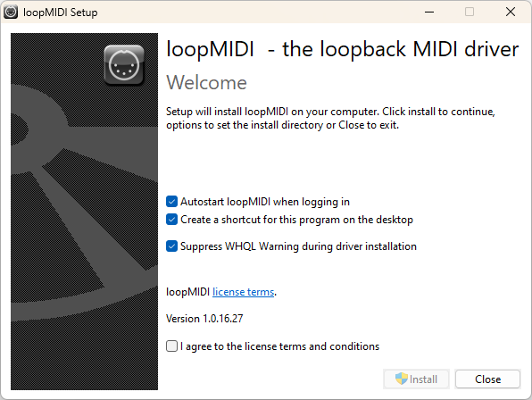
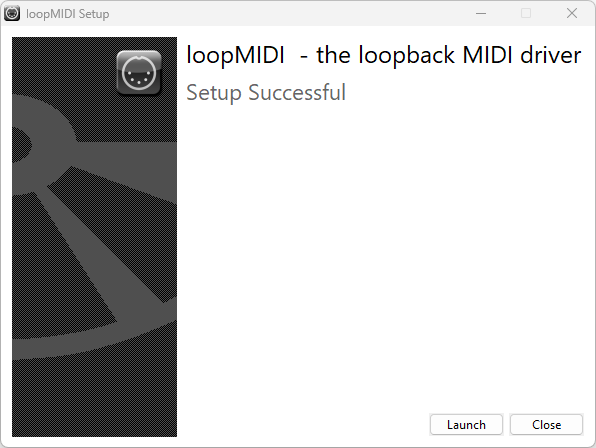
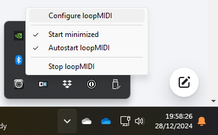
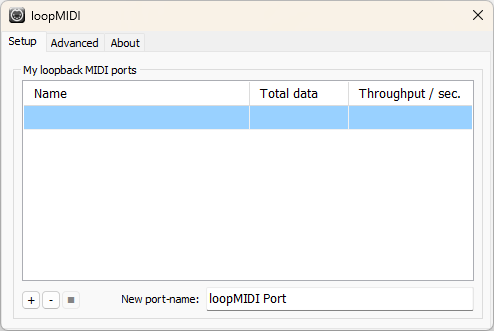
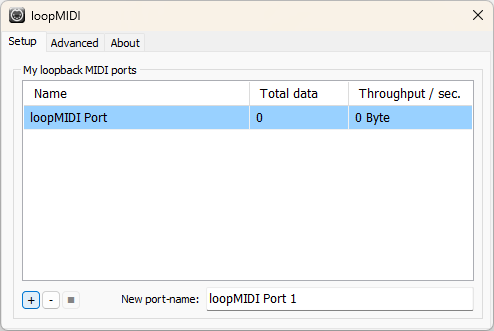

Companion Midi Button Presser

This program provides a straightforward, easy-to-set-up way to press buttons in BitFocus Companion by listening to MIDI note-on messages.
This is useful to users of software such as Proclaim or ProPresenter which can be configured to send MIDI note-on messages.On Windows, you will need to start by setting up a suitable MIDI port that for this program to listen to.
If this program and Proclaim/ProPresenter will be running on the same Windows PC, use loopMIDI to create a MIDI "loopback" port.
If you want program and Proclaim/ProPresenter to run on different computers, you will need to set up network MIDI e.g. using rtpMIDI on Windows, or the MIDI Studio window in MacOS. Configuring this is beyond the scope of this help document.
Download loopMIDI from the author's web site, unzip the downloaded file and run the setup program inside.
Tick the checkbox I agree to the license terms and conditions, and click Install.

Once installation is complete, click Launch.

Look in the Windows notification area for the loopMIDI icon (which looks like a 5-pin MIDI socket), right-click the icon and select Configure loopMIDI.

Name the MIDI port to be created (the default loopMIDI Port is fine in most cases) and click the + button bottom left.

The new MIDI port will be listed in the My loopback MIDI ports section.

You can now turn to the settings tab within this program.

The Companion host and Companion port fields tell this program where to find Companion. The default settings will work if Companion is funning on the same computer as this program, unless you have selected a non-standard network interface or port number in Companion's settings.
The MIDI In port is where you pick the MIDI port you want to listen on - e.g. the loopMIDI Port you created if you followed the earlier section of these instructions.

Page offset: By default, this module will let you "press" buttons on Companion pages 1 to 16. If you need to access a different range of pages, you can set an offset here - e.g. if you pick a page offset of 20, then this module will let you "press" buttons on Companion pages 21 to 36.
The Run automatically when I log in checkbox will do exactly what it says on the tin.